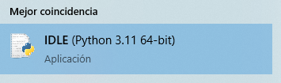
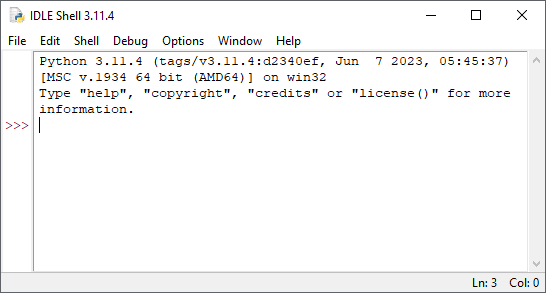
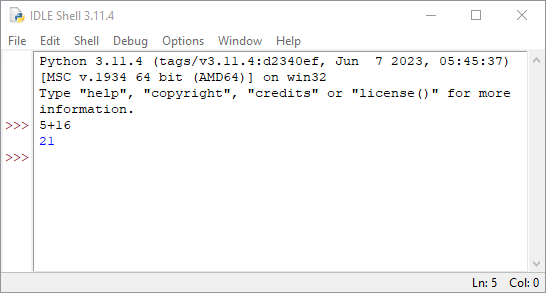

1. Introducción al lenguaje Python¶
Los lenguajes de programación son una forma de decirle a un ordenador o computadora qué debe hacer. Es como darle órdenes a un robot, pero en lugar de usar palabras, usamos un lenguaje especial llamado código. Los lenguajes de programación tienen sus propias reglas y sintaxis, y cada uno es adecuado para diferentes propósitos.
Los programadores escriben código para hacer cosas como crear videojuegos, aplicaciones de escritorio, apps móviles o páginas web. Incluso pueden usar lenguajes de programación para analizar grandes cantidades de datos y hacer predicciones.
Los lenguajes de programación se utilizan en una amplia variedad de campos, desde la ciencia de la computación y la ingeniería hasta la financiación y el análisis de datos. El conocimiento de un lenguaje de programación es una habilidad valiosa para cualquier persona que desee trabajar en el campo de la tecnología.
En este curso aprenderemos a programar en lenguaje Python. Python es un lenguaje de programación muy popular y muy potente. Se utiliza para hacer muchas cosas diferentes, como crear aplicaciones web, analizar datos, crear programas de inteligencia artificial y hasta para controlar robots. Es un lenguaje muy fácil de aprender y tiene una sintaxis clara y sencilla, lo que significa que es fácil de leer y escribir.
Además, hay mucha información y recursos disponibles en línea para aprender Python, lo que lo hace aún más accesible. Puedes encontrar tutoriales, libros y vídeos que te ayudarán a empezar a programar en Python.
¿Te gustaría ser programador en el futuro? ¡Aprender Python es un gran comienzo! Con dedicación y práctica, puedes hacer muchas cosas increíbles con este lenguaje. ¡Buena suerte en tu viaje de aprendizaje de Python!
El entorno IDLE de Python¶
Para empezar a programar vamos a abrir el entorno de programación estándar de Python, llamado IDLE. Pincha en el icono de Windows y escribe la palabra IDLE. A continuación pincha sobre el icono de IDLE.
Si no aparece el icono de IDLE, entonces es necesario instalar primero el lenguaje Python en el ordenador. Descarga Python desde la página web oficial y ejecuta el instalador. Después de instalar Python vuelve al punto anterior.
Aparecerá un entorno de programación como el que puedes ver en la siguiente imagen:
Ahora, para comenzar, escribiremos una simple cuenta: 5 + 16 y pulsaremos enter (o return) al final. La pantalla mostrará el resultado en la línea siguiente:
Podemos escribir cualquier operación sencilla u operaciones más complejas. Este entorno se denomina entorno interactivo, porque Python recibe órdenes escritas y devuelve respuestas inmediatamente.
Las macros de Python¶
Otra forma de programar es crear archivos de órdenes que se ejecutarán más tarde cuando queramos. Esta otra forma de programar tiene la desventaja de no ser interactiva, no recibimos respuesta a cada orden que escribimos. La ventaja de escribir macros consiste en que podemos tener escritas muchas órdenes para ejecutarlas cuando queramos y todas las veces que queramos.
Para crear una nueva macro pincha dentro de IDLE en la opción File
y luego en New File.
Se abrirá una nueva ventana donde podemos escribir órdenes, pero sin
recibir respuestas. Ya no se podrá ver el cursor con tres símbolos >>>.
Escribiremos dentro de esta ventana las órdenes que se pueden ver a
continuación:
Cuando terminemos, vamos a guardar este ejercicio en la carpeta Python del disco de datos D:
D:\Python\Ejercicio01.py
Ahora podemos ejecutar el programa pinchando en el menú Run
o pulsando la tecla de función F5. El resultado será el siguiente:

Debes responder al programa escribiendo los números que pide y
presionando Enter después de cada número.
Podemos ejecutar este programa tantas veces como queramos y podemos añadir al programa todas las órdenes que queramos.
Para volver a abrir el programa una vez cerrado, debes pinchar sobre el icono de tu archivo de Python guardado y, presionando el botón derecho del ratón, escoger la opción "Edit with IDLE".